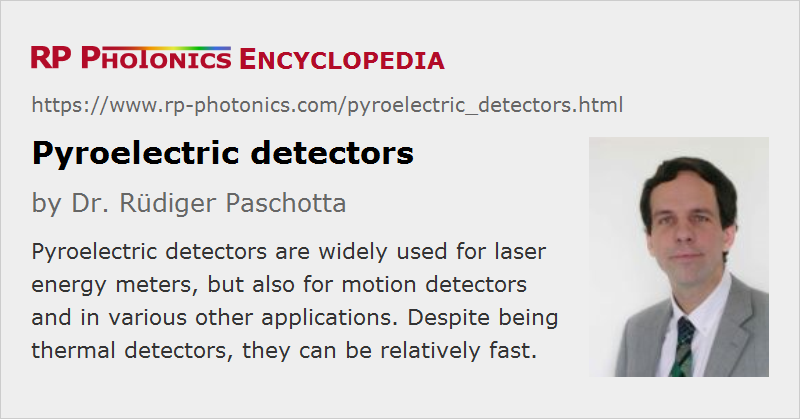

Pyroelectric Detectors
Definition: light detectors based on the pyroelectric effect
Alternative term: pyroelectric energy sensor
More general term: light detectors
German: pyroelektrische Detektoren
Categories: photonic devices, light detection and characterization
How to cite the article; suggest additional literature
Author: Dr. Rüdiger Paschotta
Pyroelectric detectors are sensors for light which are based on the pyroelectric effect. They are widely used for detecting laser pulses (rather than continuous-wave light), often in the infrared spectral region, and with the potential for a very broad spectral response. Pyroelectric detectors are used as the central parts of many optical energy meters, and are typically operated at room temperature (i.e., not cooled). Compared with energy meters based on photodiodes, they can have a much broader spectral response.
There are various other applications of pyroelectric sensors, for example fire detection, satellite-based infrared detection, and the detection of persons via their infrared emission (motion detectors).
Operation Principle
We first consider the basic operation principle. A pyroelectric detector contains a piece of ferroelectric crystal material with electrodes on two sides – essentially a capacitor. One of those electrodes has a black coating (or a processed absorbing metal surface), which is exposed to the incident radiation. The incident light is absorbed on the coating and thus also causes some heating of the crystal, because the heat is conducted through the electrode into the crystal. As a result, the crystal produces some pyroelectric voltage; one can electronically detect that voltage or alternatively the current when the voltage is held constant. For a constant optical power, that pyroelectric signal would eventually fade away; the device would therefore not be suitable for measuring the intensity of continuous-wave radiation. Instead, such a detector is usually used with light pulses; in that case, one obtains a bipolar pulse structure, where one initially obtains a voltage in one direction and after the pulse a voltage in the opposite direction.
Due to that operation principle, pyroelectric detectors belong to the thermal detectors: they do not directly respond to radiation, but only to the generated heat.
In the simple explained form, the detector would be relatively sensitive to fluctuations of the ambient temperature. Therefore, one often uses an additional compensating crystal, which is exposed to essentially the same temperature fluctuations but not to the incoming light. By taking the difference of signals from both crystals, one can effectively reduce the sensitivity to external temperature changes.
The pyroelectric charges are typically detected with an operational amplifier (OpAmp) based on field-effect transistors (JFETs) with very low leakage current.
Ferroelectric Crystal Materials
Only a small group of crystals possesses a low enough crystal symmetry (e.g. monoclinic) for exhibiting ferroelectric properties and the pyroelectric effect. They have an electrical polarization which is temperature-dependent and thus leads to pyroelectric charges when the temperature changes.
A particularly high sensitivity is achieved when using triglycine sulfate (TGS, (NH2CH2COOH)3·H2SO4). That material, however, has a rather low Curie temperature of 49 °C; above that temperature, the ferroelectric properties vanish. A somewhat higher Curie temperature of 61 °C is obtained for modified form of that material, deuterated triglycine sulfate (DTGS). Both materials, however, are not acceptable for applications where one cannot ensure that one always stays sufficiently below the Curie temperature. Note also that the pyroelectric response is substantially increased just below the Curie temperature, so that the calibration is affected. Further, there is a risk of depoling at higher temperatures. In addition, TGS and DTGS are water-solvable, hygroscopic and fragile, therefore not well suited for robust optical energy meters.
Other ferroelectric materials, belonging to the perovskite group, are lead zirconate titanate (PZT, PbZrTiO3) and lead titanate (PT, PbTiO3). They need to be used in a ceramic form (e.g. as deposited thin films), since large crystals are hard to make; additional dopants are required for stability at room temperature. These materials can be produced at relatively low cost and are far more robust than TGS.
A material with very high Curie temperature and overall high robustness is lithium tantalate (LiTaO3), which is therefore often used despite its lower pyroelectric response.
Performance Parameters
Spectral Response
As usual for thermal detectors, the spectral response can be very broad; one only requires sufficiently broadband absorption.
A pyroelectric sensor may be equipped with an infrared filter which transmits only light in a certain range of wavelengths.
Active Area
The active area is usually a circular disk or a rectangular area with a diameter between a few millimeters and a few tens of millimeters. Tentatively, detectors for higher pulse energies have larger active areas.
Surface Reflectivity
In principle, a pyroelectric detector should ideally absorb all incident light for having a sensitivity as high as possible. However, for a fast response one wants to use a thin absorbing coating, which sits on a reflecting metallic electrode, or just a metallic electrode with processed surface structure for enhanced absorption. Therefore, there can be a substantial reflectivity (of the order of 50%) in practice.
Maximum Pulse Width
For such a detector to work properly, the input pulses need to be sufficiently short. The maximum allowed pulse width vary substantially between different models; it can be some tens of microseconds, for example. Pulses from a Q-switched laser are always short enough.
Sensitivity and Dynamic Range
Pyroelectric detectors are normally used for detecting pulses with pulse energies in the nanojoule or microjoule region. The most sensitive devices have a noise floor well below 100 pJ, so that even pulse energies of a few nanojoules can be measured with a reasonable accuracy. At the same time, pulse energies as high as 10 μJ may be allowed, so that one effectively has a dynamic range of e.g. 40 dB for energy measurements.
Other devices are optimized for much higher pulse energies of e.g. several joules, but have a higher noise floor, allowing measurements down to pulse energies of tens of microjoules instead of nanojoules.
Note that there may be a further limitation for the allowed average power. That means that for the highest possible pulse repetition rates, the pulse energy needs to be limited, because otherwise there would be too strong heating of the sensor.
Detection Bandwidth
A typical detection bandwidth of a pyroelectric detector is several kilohertz, or sometimes even tens of kilohertz. This is quite fast compared with many other thermal detectors such as thermocouples and thermopiles, and is possible due to the small thermal capacity of the compact detector crystal. (The electrical capacity can in principle also be a limiting factor, but typically the thermal relaxation time is essential.) For a particularly fast response, one can use thin metallic electrodes with a processed absorbing surface, minimizing the thermal capacity.
Suppliers often specify instead of a true bandwidth the maximum allowed pulse repetition rate, where one can still measure the energy of each pulse. This is actually the quantity which is most relevant for users. One can use such a detector for monitoring pulse energy fluctuations of a Q-switched laser, for example. For measuring only the average pulse energy, one could simply use a slow thermal detector, which delivers the average power, and divide this by the pulse repetition rate.
The pulse repetition rate of a mode-locked laser would be far too high; here one would have to use a photodiode.
Response to Sound (Microphony)
All pyroelectric crystal materials are also piezoelectric. Therefore, a pyroelectric detective will also show some response to incoming sound waves, i.e., it acts as a microphone – which is normally unwanted. Such microphony can be suppressed e.g. with proper mounting and shielding of the crystal.
Suppliers
The RP Photonics Buyer's Guide contains 9 suppliers for pyroelectric detectors. Among them:
Questions and Comments from Users
Here you can submit questions and comments. As far as they get accepted by the author, they will appear above this paragraph together with the author’s answer. The author will decide on acceptance based on certain criteria. Essentially, the issue must be of sufficiently broad interest.
Please do not enter personal data here; we would otherwise delete it soon. (See also our privacy declaration.) If you wish to receive personal feedback or consultancy from the author, please contact him e.g. via e-mail.
By submitting the information, you give your consent to the potential publication of your inputs on our website according to our rules. (If you later retract your consent, we will delete those inputs.) As your inputs are first reviewed by the author, they may be published with some delay.
See also: optical energy meters, thermal detectors
and other articles in the categories photonic devices, light detection and characterization
|  |
If you like this page, please share the link with your friends and colleagues, e.g. via social media:
These sharing buttons are implemented in a privacy-friendly way!